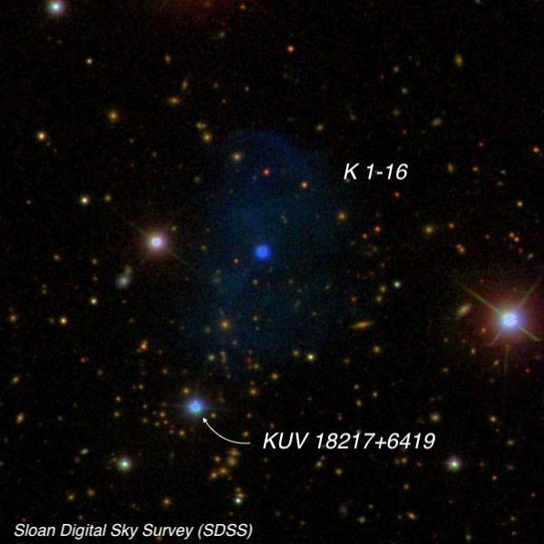
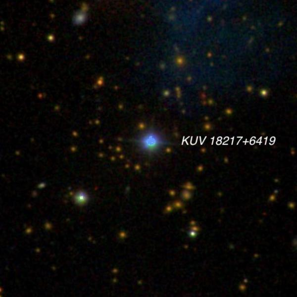
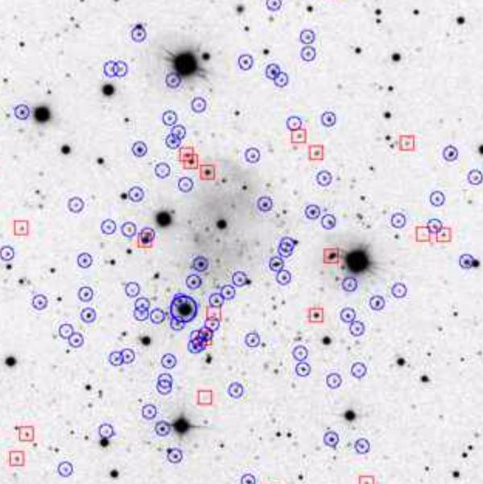
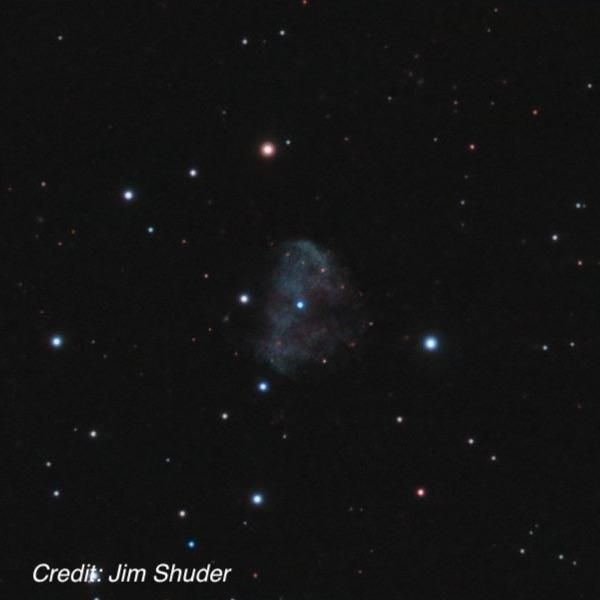

KUV 18217+6419 + K 1-16, a remarkable duo
- Name: KUV 18217+6419 = [HB89] 1821+643
- Type: Quasar, Sy1
- Position: 18 21 57.2 +64 20 36
- Constellation: Draco
- Mag: 13.5-14.2
- Redshift: z = .297
- Name: K 1-16 = PK 94+27.1 = PN G094.0+27.4
- Type: Planetary Nebula
- Position: 18 21 52.2 +64 21 54
- Size: 130"x100"
- Mag: ~14.6
Here we have an unusual combination -- a faint and relatively large PN situated just 1.4' from a 14th magnitude quasar with a light-travel time of 3.4 billion years! This fantastically mismatched duo is located just 3° SE of the Cat's Eye Nebula (NGC 6543).

KUV 18217+6419 is one of the most optically luminous quasi-stellar objects (QSOs) in the local universe! This object was discovered in 1977 as an X-ray source by the HEAO1 satellite. It was observed again in 1980 by the Einstein satellite with higher precision. In 1981, a stellar object of v = 14.1 was found as the optical counterpart. Follow-up spectroscopic investigations revealed a Seyfert 1-spectrum, which led to the quasar classification. Just one year earlier, this quasar was found independently in the optical (v = 14.24) by the KISO-Survey (KUV 18217+6419), searching for UV-bright stellar sources. The host galaxy of quasar KUV 18217+6419 is a giant elliptical galaxy, also classified as a Hyperluminous Infrared Galaxy (HyLIRG). The quasar host resides at the centre of galaxy cluster CL 1821+643. Quasar KUV 18217+6419 is one of the most luminous radio-quiet quasars in the area of z < 0.5, and the second brightest quasar of all at z > 0.1.
Source: http://quasar.square7.ch/fqm/1821+643.html
KUV 18217+6419 is the cD in a massive, distant galaxy cluster with members in the mag 21-22 range. Here's a close-up SDSS image of the cluster. In the second image of the cluster, members are indicated by blue circles and non-members by red squares (spectroscopically determined). In an X-ray study published just last week the actively feeding black hole in KUV 18217+6419 was determined to contain 3 to 30 billion solar masses, making it one of the most massive known. This news story contains a composite X-ray, radio and optical image.


The quasar shines at 14th magnitude and at a distance of 3.4 billion light-years, it is nearly twice as far as 3C 273. I found it easy in my 18" and 24" (as a stellar point, of course). And by an unusual coincidence, it's situated just off the southeast side of the faint planetary nebula K 1-16!
Lubos Kohoutek discovered K 1-16 in 1962 during a systematic visual search of the Palomar Sky Survey red and blue prints (POSS1). The objects (K 1-7 to K 1-20) were selected according to their shape and occurrence of a central star. The discovery was published in the Bulletin of the Astronomical Institute of Czechoslovakia, vol. 14, p.70 (http://adsabs.harvard.edu/full/1963BAICz..14...70K)
Kohoutek noted "On the red print: almost elliptical disc of mean density, 130"x100" in dimensions. Central star m = 16.8 (red). On the blue print: almost elliptical disc of the same dimensions and with density rather greater than on the red print. Central star m = 14.9 (blue)."

Dana Patchick likely made the first visual observation of K 1-16 back in July 1986 using a 17.5" reflector in southern California. I found it very tough in my 18" in August 1997. The field was identified using 220x and a mag 14.5-15 central star was easily seen but I didn't see any nebulosity. So, I backed down to 100x and added an OIII filter. With this combination the planetary was barely glimpsed as a moderately large (1.0'-1.5'), extremely faint disc. It was confirmed several times with concentration but was near my visual threshold.
I've observed K 1-16 a couple of times in my 24":
24" (8/30/16): at 200x + NPB filter; very faint, fairly small, roundish glow, roughly 40" diameter. The 15th magnitude central star was occasionally visible with the filter and was easily seen continuously unfiltered. A mag 13.3 star is just off the east side. KUV 18217+6419, a 14th magnitude quasar at 3.4 billion light-years distant, was easily visible off the southeast side, 1.4' from center.
24" (9/13/12): visible at 125x using an OIII filter as a very faint, irregular glow, ~60" dia with a mag 13.3 star just off the east edge. Just visible continuously with averted vision. Only the portion of the rim on the northwest side was seen as an arc, as the low surface brightness glow generally did not have a sharp edge. The 15th magnitude central star was visible unfiltered.
So, here's a great two-fer, with the nearby object much more challenging!
As always,
"Give it a go and let us know!
Good luck and great viewing!"